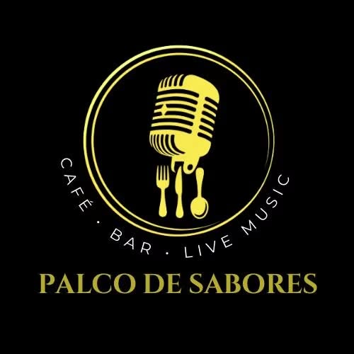

01
Francesinha c/ batata
O clássico portuense, servido com batata frita.

Reservar mesa ↗Porto, desde sempre
Sabores honestos, mesa cheia e a energia certa. Um lugar para comer, ouvir e ficar mais um pouco.
Muito mais que uma refeição
No Palco de Sabores, a cozinha encontra a música e a tradição ganha uma nova voz. Servimos comida com alma, feita para partilhar, num espaço onde toda a gente se sente em casa.
Conhecer o Palco ↗Uma mesa, uma canção, um prato a chegar. Entre e fique à vontade.
Comida deliciosa, espaço lindo
e um atendimento de coração.
R. Formosa 132
4000-246 Porto
22 208 3503
Reservas por telefone
Segunda a sábado
09:00 — 22:00
A mesa está posta